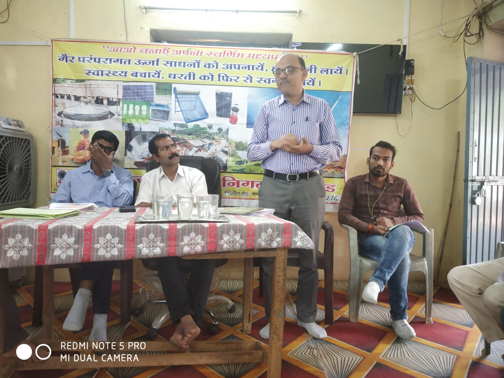
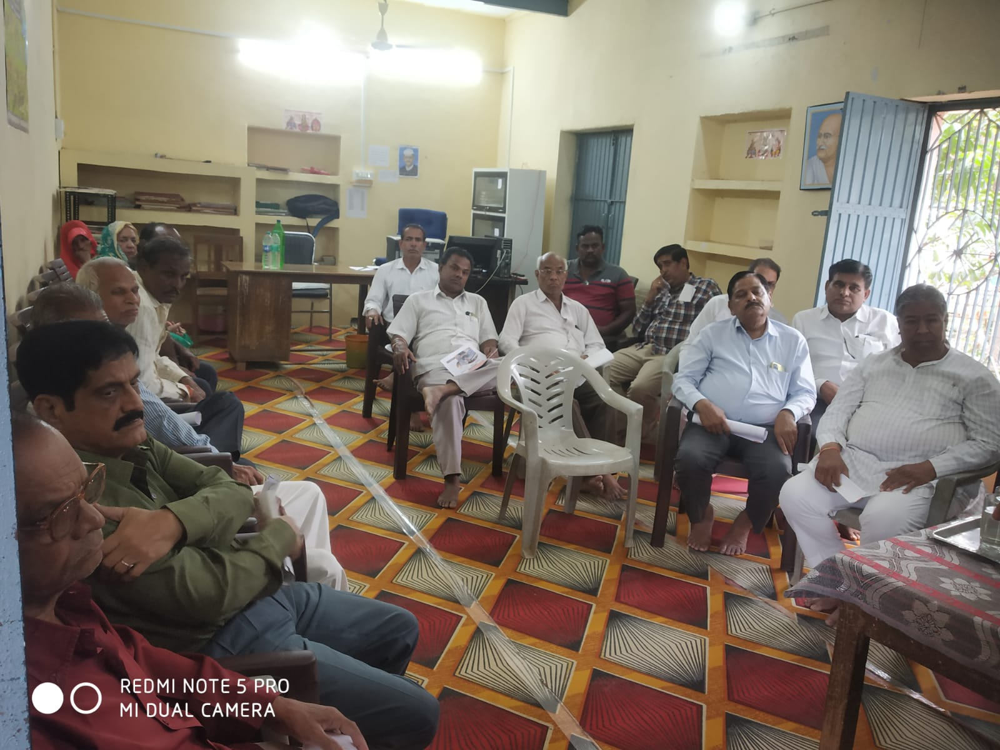

गांधी सागर / प्रधानमंत्री सूर्य घर मुफ्त बिजली योजना को लेकर मंदसौर जिला कलेक्टर के निर्देशानुसार ग्राम पंचायतों गाँधीसागर में सरपंच मनीष परिहार की अध्यक्षता में एक सेमिनार आयोजित किया गया

प्रधानमंत्री सूर्य घर मुफ्त बिजली योजना को लेकर मंदसौर जिला कलेक्टर के निर्देशानुसार ग्राम पंचायतों में इस योजना को लेकर जागरुकता करने को लेकर ग्राम पंचायत गाँधीसागर में सरपंच मनीष परिहार की अध्यक्षता में नगर के जनप्रतिनिधी एवं ग्राम वासियों की उपस्थिती में एक सेमिनार आयोजित किया गया जिसमें महेश हनुमंते ( अक्षय ऊर्जा विकास अधिकारी मंदसौर ), दीपांशु गुप्ता ( सहायक अभियंता बिजली विभाग ) , अमित खाबिया ( मणिदीप ट्रेड लिंक मंदसौर ) ने भारत सरकार की इस योजना से पृथक पृथक सौलर पैनल को लगाने के उद्देश्य तथा फायदो को लेकर विस्तृत जानकारी देते हुए कहा कि आदर्श सौर ग्राम पंचायत अंतर्गत गाँधी सागर को जोडना है । साथ ही अपने निवास पर लगे सौलर पैनल से उत्पादित बिजली एवं उसकी खपत के अतिरिक्त बचत खपत को बिजली विभाग से कैसे फायदा उठाया जाए इसकी भी जानकारी दी गई । सेमिनार में अशोक खंडेलवाल , अशोक तिल्लानी , सुरेन्द्र नायर, शरीफ पठान , माधुलाल गुर्जर , खुदीराम विश्वास, पूरन माटा , दिनेश शर्मा , रतनदास बैरागी , सत्यनारायण रत्नावत सहित अन्य ग्राम वासी उपस्थित थे । ।
